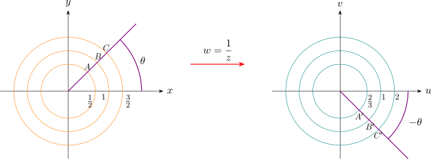

5.6 The Inversion Mapping \(w = \dfrac {1}{z}\)
In polar form if \(\hspace {0.2cm} z = re^{i\theta }\hspace {0.2cm}\) and \( \hspace {0.2cm} w = \rho e^{i\phi }\hspace {0.2cm}\) then we have
\[\boxed {\rho e^{i\phi } = \dfrac {1}{r}e^{-i\theta }}\]
So that \(\hspace {0.2cm}\rho = \dfrac {1}{r}\hspace {0.2cm}\) and \(\hspace {0.2cm} \phi = -\theta .\hspace {0.2cm}\) Since the radius under goes an inversion, the mapping \(\hspace {0.2cm} w = \dfrac {1}{z}\hspace {0.2cm}\) is called an inversion
mapping.
There is a one-one correspondence between points in the \(z-\)plane and points in the \(w-\)plane, except the
points \(\hspace {0.2cm} z = 0\hspace {0.2cm}\) and \(\hspace {0.2cm} w = 0\hspace {0.2cm}\) which have no images.

The inversion mapping \(\hspace {0.2cm} w = \dfrac {1}{z}\hspace {0.2cm}\) sends circles centered at the origin in \(z-\)plane into circles centered at the origin
in the \(w-\)plane.
In general, the mapping \(\hspace {0.2cm} w = \dfrac {1}{z}\hspace {0.2cm}\) sends circles into circles or straight lines.
Consider any circle \begin {equation} \boxed {(x-a)^2 + (y - b)^2 = c^2} \end {equation}
In the \(z-\)plane centered at \((a,b)\) with radius \(c\). Setting \(\hspace {0.2cm} x = \dfrac {z + \overline {z}}{2}\hspace {0.2cm}\) and \(\hspace {0.2cm} y = \dfrac {z - \overline {z}}{2i}\hspace {0.1cm}, \hspace {0.2cm}\) then \((1)\) becomes \begin {equation} \boxed {z\overline {z} + Az + \overline {Az} + B = 0}\\ \end {equation}
From \(\hspace {0.2cm} w = \dfrac {1}{z}\hspace {0.1cm}, \hspace {0.2cm}\) get \(\hspace {0.2cm} z = \dfrac {1}{w}\hspace {0.2cm}\) and \(\hspace {0.2cm} \overline {z} = \dfrac {1}{\overline {w}}\).
So that the image in the \(w-\)plane or the circle \((2)\) is \begin {equation} \boxed {\dfrac {1}{w\overline {w}} + \dfrac {A}{w} + \dfrac {\overline {A}}{\overline {w}} + B = 0}\\ \end {equation}
At this we consider two cases \(\hspace {0.2cm} B\neq 0\hspace {0.2cm}\) and \(\hspace {0.2cm} B = 0;\hspace {0.2cm} B = 0\hspace {0.2cm}\) corresponds the case when the circle \((1)\) passes through the origin
and \(\hspace {0.2cm} B\neq 0\hspace {0.2cm}\), case where circle in \(z-\)plane does not pass the origin.
- 1.
- \(B\neq 0\hspace {0.2cm}\) (circles not through \(z = 0\))
If \(B \neq 0\), we can write (3) as \(\hspace {0.2cm}\boxed {w\overline {w} + \dfrac {\overline {A}}{B}w + \dfrac {A}{B}\overline {w} + \dfrac {1}{B} = 0}, \hspace {0.2cm}\) which is of the same form as (2) since \(\hspace {0.2cm} \dfrac {1}{B}\hspace {0.2cm}\) is real, and take coefficient \(\hspace {0.2cm}\dfrac {A}{B}\hspace {0.2cm}\) is the complex conjugate of \(\hspace {0.2cm}\dfrac {\overline {A}}{B}.\hspace {0.2cm}\) Thus the image is a circle. - 2.
- \(B = 0\) (circles through \( z = 0\))
If \(B = 0\), we can write (3) as \(\hspace {0.2cm} 1 + A\overline {w} + \overline {A}w = 0,\hspace {0.2cm}\) in terms of \(u\) and \(v\) as \[bv - au + \dfrac {1}{2} = 0\] which is a straight line.
One can show that \(\hspace {0.2cm} w = \dfrac {1}{z}\hspace {0.2cm}\) sends straight lines that do not pass through the origin into circles and straight
lines through \(z = 0\) into straight lines.
Check by considering \(\hspace {0.2cm}ax + by + c = 0\hspace {0.2cm} \) in the \(z-\)plane. \(\hspace {0.2cm} u + iv = \dfrac {1}{x + iy}\).
Questions on this section
Stuck on something here? Ask below and it stays attached to this topic.